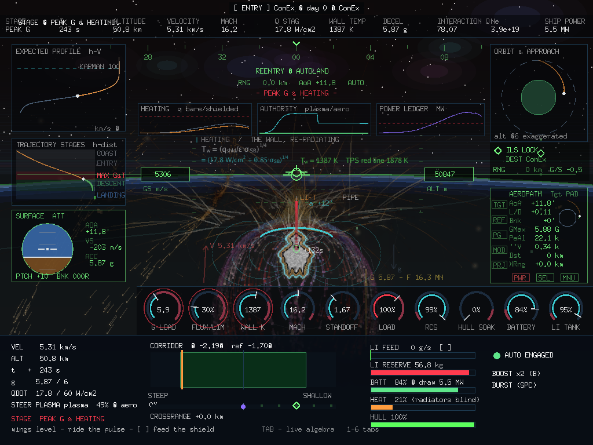
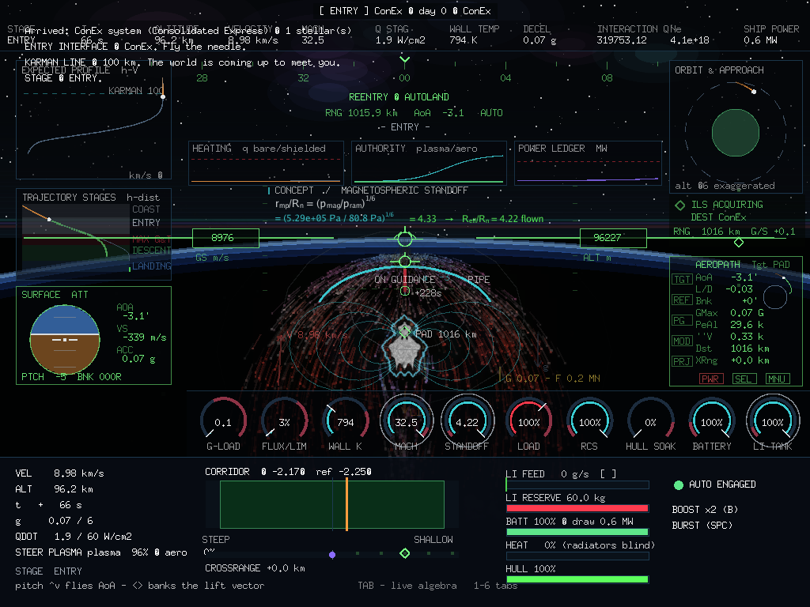
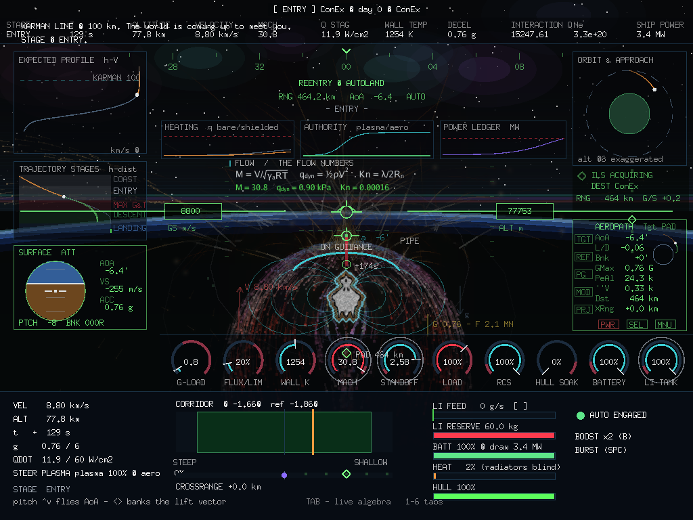
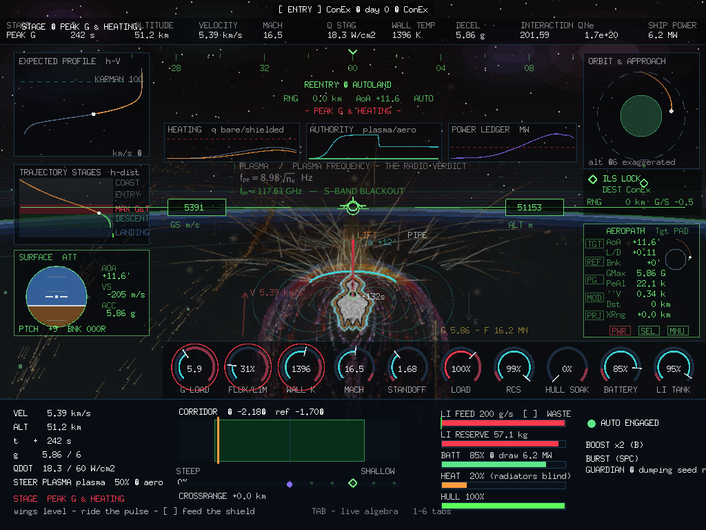
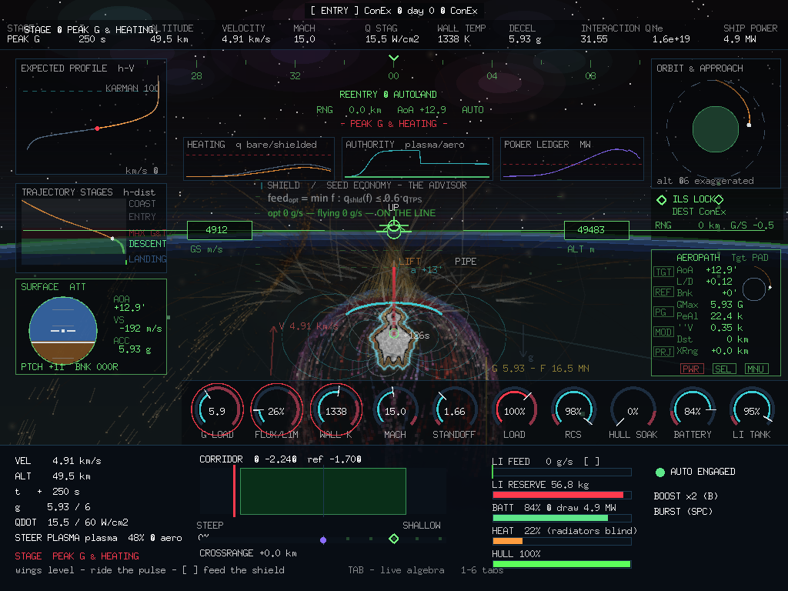
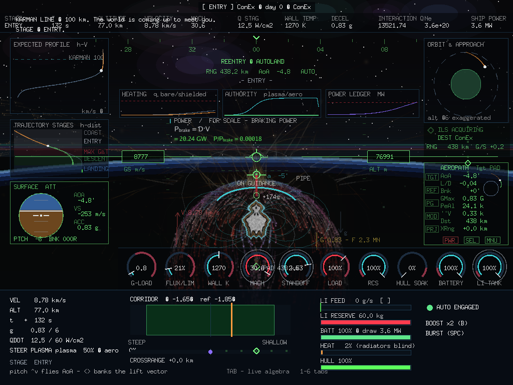
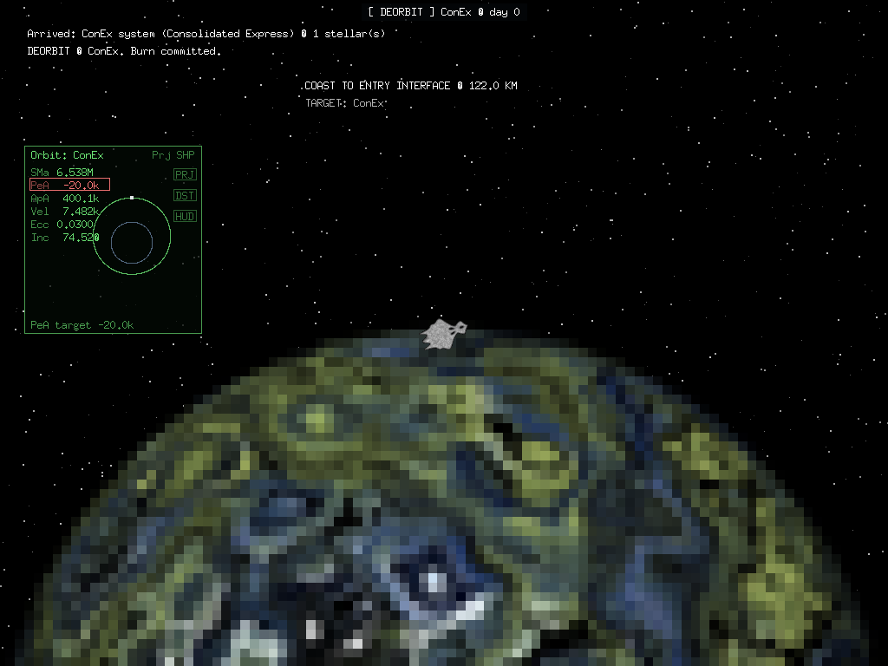
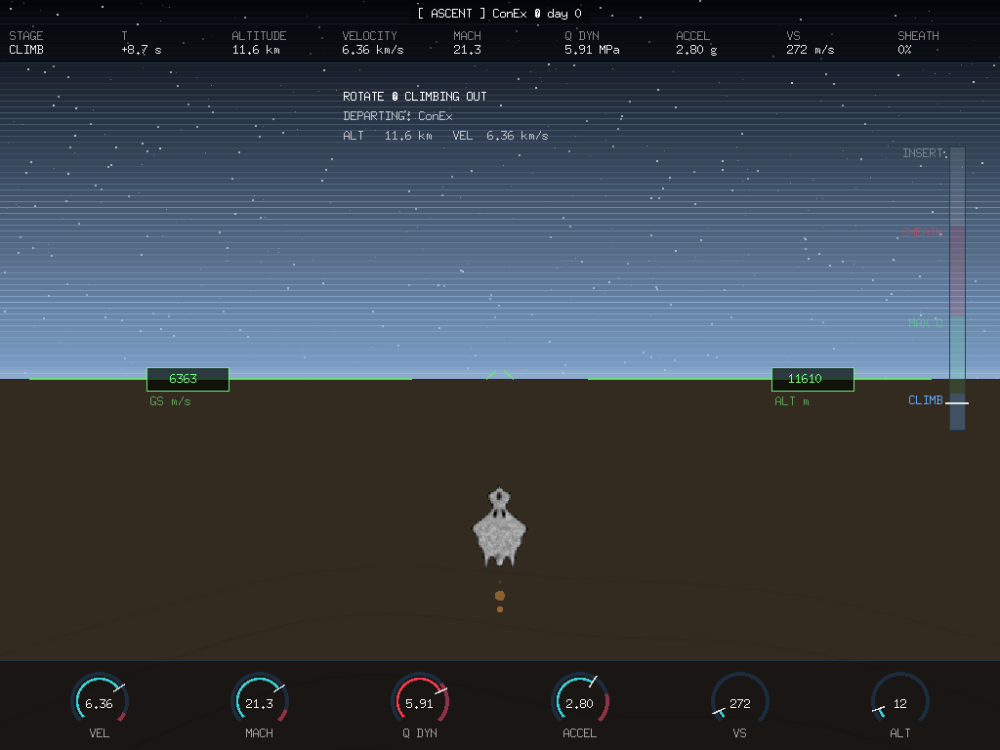

THE CONSOLE'S PHYSICS, FLOWN · GONEX WRITEUP · 2026-09-01
LR-2026-05LR-2026-06gonex 8f72e19vec ok
The Yodacon's landing is a flown maneuver, and the flying is real physics: the MHD reentry console — our vendored envelope-model prototype — proves the whole descent as six numerical-flow tabs: CONCEPT, FLOW, HEATING, PLASMA, SHIELD, POWER. This writeup records the round that moved all six into the cockpit. The trajectory is classified live into six stages (deorbit coast, entry, peak g, skip, descent, landing), each stage brings its own gauges forward — and the console's algebra is typeset onto the black of the sky itself, recomputed from the simulation every frame, touring tab by tab on the way down.

The typography matters. The cockpit's working face is a 7×13 bitmap; an equation wants ρ, a raised ², a lowered subscript, a bar over the radicand. So the sky gets its own micro-typesetter over a vector face — subscripts, superscripts, drawn radicals, real Greek. When the sky is black — which is most of an entry — the current tab writes one block at a time above the horizon: label, equation, substitution → result. TAB hides the layer, 1–6 pins a tab, and left alone it tours itself. It dissolves as the air claims the dome: daylight, not a setting, turns it off.
Three ideas make a 350-tonne freighter flyable. The coil inflates a plasma pillow that stands off where magnetic pressure balances the ram of the oncoming air. Braking power is free — the trajectory sheds it whether you like it or not. And the entry is a corridor, not a line.
The sixth root is why the STANDOFF dial moves early and slowly: at interface the pillow is four times the hull and shrinks as ρV² grows. The corridor needle is the whole game — the stick flies the wedge, the coil flies the heat.

Everything downstream is set by the air you are in. The standard atmosphere gives ρ(h) and T(h); from them the Mach number, the dynamic pressure, the Knudsen number — and behind the shock, a real-gas layer packed twelvefold and heated by the stagnation enthalpy.
Altitude is the master variable. The stage machine, the corridor width, the heating, the plasma — all follow ρ(h). Above ~100 km the air is theory and the gauges idle; the entry begins when qdyn wakes the needle.

Peak heating is a velocity event, not an altitude event. Convective flux rides the cube of speed; above nine kilometres a second the shock layer itself starts to shine; and the wall settles where its own re-radiation balances the input, on a fourth root.
This is why the corridor holds −1.7° through the pulse: spend the velocity high, where ρ is small, and the V³ law never gets its way. FLUX/LIM and WALL K are this tab with needles — hold flux under 100% and the wall never reaches the red line.
Electrons are the working fluid. Saha's charge balance sets how many the shock layer yields; lithium, ionising at 5.39 eV against air's ~13.6, means a trace of seed owns the electron budget; and the electron density sets the plasma frequency — the mirror edge that decides both the shield's grip and the radio's silence.
The [ ] feed keys literally buy conductivity. Blackout is physics, not a fault: the ILS sits at ACQUIRING while fpe is above S-band and locks as the sheath cools — and the sky shows you the derivation while it happens.

The deceleration phase's economy, and the round's point. Coupling has a knee: the interaction parameter Q buys the gate Q/(1+Q), and past the knee more electrons buy almost nothing. So the game solves the model backwards, a few times a second: the least feed that holds the flux at 60% of the TPS limit.
The LI FEED bar carries the advisor's green caret. Fly on it and you neither waste seed (WASTE — gate saturated, grams buying nothing) nor burn hull (STARVED — sheath hot, shield thin). Every gram saved is lithium still in the tank at the pay screen; every hull point saved is repair credits. The honest surprise: for most of the descent the optimum is zero — the seed exists for the pulse.

The shield's bill, and the scale that excuses it. Phased array, cryogenic lift — fifty electrical watts per watt lifted at 30 K, peaking exactly when the vehicle is hottest — seed conditioning, avionics: megawatts. Against a braking power of tens of gigawatts that the trajectory sheds for free.
The bus cap is real: over it the array loses half its authority, and a starving battery costs again — an entry on an empty battery is nearly a bare-body entry. Enter with the deep store full, treat coil overdrives as capacitor transactions, and remember the seed's conditioning cost is part of the feed decision.

The stage is classified off the live physics every frame — terminal stages own their altitudes, the skip is a geometry condition, peak g a loads condition. Each stage rings its own three dials and puts its control hint on the panel.
| STAGE | PHYSICS GATE | RINGED DIALS | THE STICK IS FOR |
|---|---|---|---|
| DEORBIT COAST | h > 100 km | MACH · BATTERY · LI TANK | hold trim — the air is still theory |
| ENTRY | the default band | MACH · STANDOFF · LI TANK | pitch flies AoA, bank rolls the lift vector |
| PEAK G & HEATING | g > 0.35·Glim or q̇ > 0.45·TPS | G-LOAD · FLUX/LIM · WALL K | wings level, ride the pulse, fly the feed caret |
| SKIP | γ flat-or-climbing, hypersonic, h > 55 km | MACH · STANDOFF · BATTERY | push down — don't surf out of the corridor |
| DESCENT | h < 42 km or V < 2.4 km/s | LOAD · RCS · HULL SOAK | bank onto the pad line, mind the RCS bottles |
| LANDING | h < 20 km or V < 700 m/s | RCS · HULL SOAK · BATTERY | glideslope capture — bleed speed, stay lined up |
The classic trainer's one-number ceremony — "PeA should read −20 km after the deorbit burn" — is the deorbit stage's own gauge now: an Orbit MFD rides the retro-burn, the parking circle pinches toward the planet, and PeA runs +362.0k to −20.0k, ringed red at the mark. The takeoff got the same treatment in reverse: telemetry strip, dial cluster and ascent stage tape, all computed from the standard atmosphere evaluated at the climb — Mach, max-q and axial g on real air, not animation curves.


Every gauge sits on running physics. The sky shows the derivation; the dials show the needle; the debrief signs for the difference.